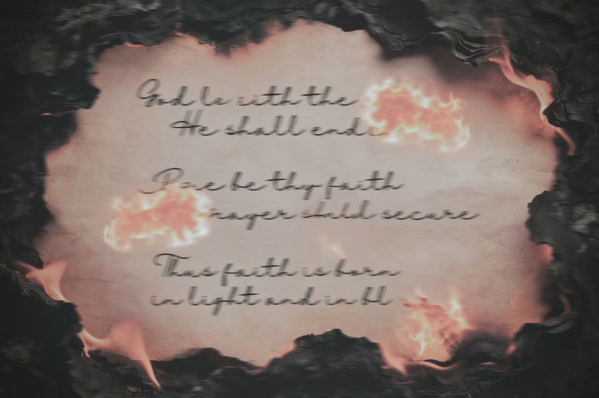

曾经有人问过魏之：“你的名字是哪个‘zhi’啊？”魏之这个时候就像是终于等到别人问她这个问题一样，十分胸有成竹的开口：“之乎者也的之，因为很简单。”而这种答复通常会出现两种情况：有人赞叹好有文采，顺着话题闲聊下去；也有人失望，嘀咕一句 “怎么不是知道的知”，然后照样闲聊。
魏之不太懂他们在意的点，所以站起身从公园回了家。今天是星期五，难得比较清闲的工作日，在超市买了点根本不能称得上是“食物”的压缩饼干和矿泉水之后，魏之回到了现在的住处——后来张南兮吐槽“你这个地方除了是个密闭空间还是个什么我真想问问了，你竟然没发霉。”一张床、一张圆桌、一个柜子，三个独立的家具就这样每个人孤零零占据了房间的三个角落，处处透露着像三个毫不相关的陌生人不得不共处一室的拘谨。魏之打开灯放下东西，走到桌子前打开电脑记事本，密密麻麻的文字一下子拉不到底，她就这样笨拙地按着键盘向下键过去了快一分钟，才在空白处写下了第2581条注意事项：
“人类好像很爱闲聊。”
是的，魏之不是人，确切来说应该不算是普世价值定义下的人，不过她也挺喜欢别人这么称呼她。如果一定要用一个此来定义魏之的话，或许名字的谐音就很合适——
“未知”
或者更直白一点，
“意识体”。
魏之一开始也不叫魏之。
祂没有名字，没有性别，更没有年龄增长一说。
祂诞生于百年前连绵不断的战火里，那时候，人类赋予过祂一个神圣的称呼——
“信仰”。
人们总想在动乱时求一个安稳，所以他们涌进摇摇欲坠的教堂，从废墟中挖出塔尖的十字架，放在唯一能照到光亮的地方；他们诚心祷告，祈求神的降临与慰藉；他们振臂高呼，膝行着将手臂伸向穹顶的一线阳光。他们始终相信会有神来救他们，却惊恐地发现，那道所谓温暖的日光，其实是冲天的火光。
他们开始愤恨，开始暴怒，开始互相推搡，开始质疑神的存在。教堂在漫天火光中，承载着信徒的绝望与恨意，轰然付之一炬。

God loveth the world; He shall endure. 神爱世人，神将永存。
Pure be thy faith, thy prayer shall secure. 信念纯净，愿望必得成就。
Thus faith is born, in light and in blame. 善恶本一体，信仰由此而生。
阴差阳错，“祂”终于降临。确切地说，是信徒们滔天的恨意与对神的盲从，共同催生了一个怪物。没有人知道祂的模样，更没有人能看见祂。祂没有善，没有恶，只有与生俱来、浓稠得化不开的负面情绪。祂听不懂救赎，只懂痛苦；听不懂祈求，只懂怨毒。
于是祂凭着本能，对人类发动了一场反向的意识操控。
战争确实结束了。代价却是生灵涂炭，满目疮痍。祂站在焦土之上，第一次感受到一种陌生的情绪——不是愤怒，不是恨意，而是空洞。祂不懂愧疚，却厌倦了被情绪裹挟、被人类的痛苦喂养的存在。于是祂主动收敛所有意识，将自己封闭在那片已成废墟的教堂之下，不再窥探，不再干预，不再出现。沧海桑田，岁月流转。祂在黑暗里沉默了一年又一年，看着人类一次次燃起战火，又一次次重建家园。祂以为自己会永远这样沉寂下去。直到某一天，祂忽然察觉到——世界上，并不只有祂一个。远方断断续续地传来与祂波动高度重合的频率。微弱、模糊、一闪而逝，却真实存在。那是和祂一样，由意识凝聚而成的存在。同类？这个念头第一次穿透祂层层封闭的意识。祂不再是孤零零的一团恨意，祂不是唯一的“怪物”。为了寻找那些频率，祂做了一个决定：离开这片废墟。
祂挑选了一张最不惹眼、最普通的少女模样，没有性别意味，只是方便行走在人群中。祂需要一个名字，一个人类能听懂、能称呼、不会起疑的名字。想了很久，最终选择了魏之。祂是未知的存在，来自未知的过去，走向未知的未来。也因为“之”字最简单，不容易出错。从此，世间再没有诞生于战火与恨意的意识怪物，只有一个叫魏之的少女。
漫长的漂泊：每到一处，她都小心翼翼地模仿人类的生活，学着说话、走路、买东西、住房子；她发现那些相似的频率，生命力都远不及自己旺盛，大多微弱、短暂、一碰就散；找不到真正完整的同类，只能一次次失望，再一次次迁徙。为了不被察觉异常，祂每隔一段时间就换一座城市，换一个住处。不深交，不留恋，不留下痕迹。房间永远只有最简单的家具：一张床、一张桌、一把椅，各自孤立。祂在记事本里一条一条记下人类的规则，笨拙地模仿，努力活得像个“正常人”。
直到这一次。
祂在这座新的城市定居下来，本以为和以往无数次一样，只是短暂停留。却在某一天，毫无预兆地感受到了一股异常强烈、异常清晰的意识共鸣。不是微弱的闪烁，不是转瞬即逝的波动。是持续、稳定、滚烫，像一道不会熄灭的光，直直撞进祂沉寂百年的意识里。这一次，绝不是那些脆弱的碎片。很可能是真正的、和祂一样完整的同类。